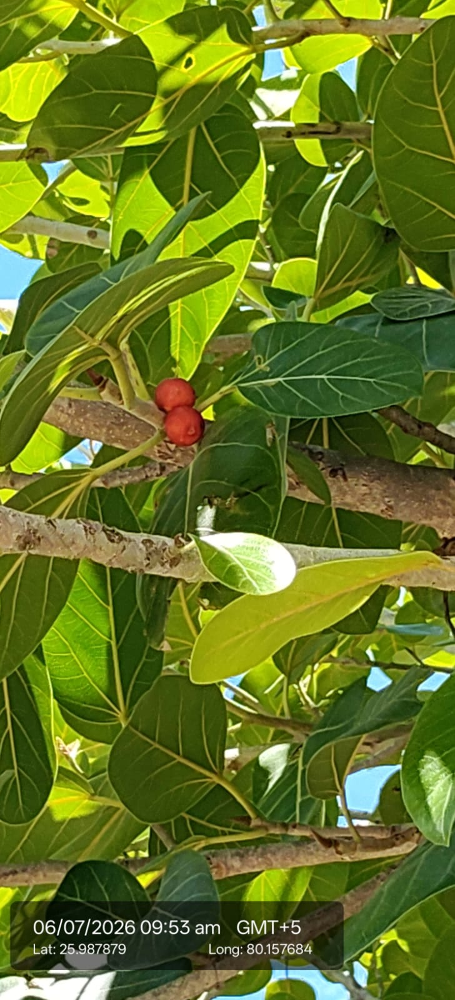

Visual record01 photographs

| Scientific name | Ficus benghalensis |
|---|---|
| Family | Moraceae |
| Category | Trees |
Habitat & Growing Conditions
- Native to the Indian subcontinent. The national tree of India
- Very common throughout UP including Kanpur area in your coordinates. Found in villages, temples, roadsides, and open areas
- Thrives in tropical to subtropical climate. Grows well at 15-45°C. Very drought and heat tolerant once established
- Needs full sun. Grows in almost all soil types - sandy, loamy, rocky, and saline soils. pH 5.5-8.5
- Propagates easily by seeds and cuttings. Birds disperse seeds. Can live for hundreds of years
Economic Importance
- Religious and Cultural: Most sacred tree in Hinduism. Associated with Lord Vishnu, Shiva, and Yamraj. Worshipped and planted near temples
- Provides huge shade and shelter. Fruits feed birds, bats, and monkeys. Aerial roots prevent soil erosion
- Latex: Milky latex used for birdlime and in traditional medicine
Medicinal Importance
- Bark, leaves, latex, and aerial roots used in Ayurveda for diabetes, wounds, diarrhea, skin diseases, and inflammation. Note: Consult a healthcare professional before any medicinal use
- Timber: Wood is soft and not very durable. Used for furniture, boxes, agricultural tools, and fuelwood
- Fodder: Leaves are excellent fodder for goats, cattle, and elephants. Rich in protein
Field Notes
- Aerial roots used for making ropes and baskets. Bark yields tannin used in dyeing